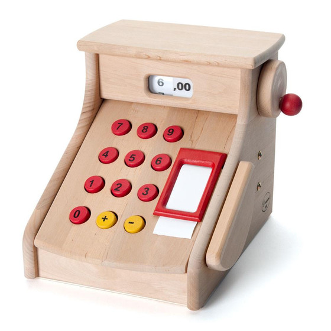

CRISPEE is a tangible toy created by Wellesley College's Human-Computer Interaction Lab in collaboration with Tufts University's DevTech Lab to teach children ages five through seven about genetics and bioengineering. CRISPEE has gone through several design iterations, and this guide centers the latest, named Emu. In our introduction of bioengineering concepts to these young kids, CRISPEE was a tool used to solidify the idea of inhibitor and activator genes after a series of questions about life and difference. Kids place blocks in the mixing platform of CRISPEE, press a button to test the validity of their block combination, shake the mixing platform back and forth, and see a colored light display the result of their program.
Wellesley College HCI Laboratory:
Associate Professor of Computer Science Orit Shaer
Research Fellow Clarissa Verish
Undergraduate Student Researchers Allison Turner and Tyanna Crump
Funded under National Science Foundation Grant IIS-1563932
Tufts University DevTech Laboratory:
Ph.D. Candidate in Child Development Amanda Strawhacker
Undergraduate Student Researchers Naomi Durand and Alejandro Colina-Valeri
A summary of CRISPEE's supporting curriculum will be added here later.
Links to the curriculum resources, like the storybook page files and guiding questions, will be added here later
There are a number of external guides and resources on the creation of CRISPEE v3. These resources are:
The section Overview of CRISPEE Construction gives a 10,000 foot view of CRISPEE's construction
CRISPEE v3 was designed to remind the user of the asymmetry of real life gene-editing devices.


It is also designed to be chunky and organic, like toys from Ikea or Melissa & Doug, hence the wood, felt, and big button.
The external shell houses all of the pieces of CRISPEE Emu and achieves this desired form. The external shell is made up of the side walls, the front wall, the removable back, the external bottom, and the face of CRISPEE.
Materials:
Equipment:
Skills:
Refer to the Wooden Shell Assembly Guide for step by step instructions on creating CRISPEE’s wooden form
The electronics of CRISPEE Emu are compartmentalized to the back of CRISPEE, inaccessible to young users, by the internal walls. The internal walls also give CRISPEE a more polished look. The internal walls form the back and sides of the space designated for the mixing platform, and they interlock with the internal bottom and external face of CRISPEE. The internal walls should be assembled before the top of the external shell is glued on.
Materials:
Equipment:
Skills:
Refer to the Wooden Shell Assembly Guide for step by step instructions on creating CRISPEE’s wooden form
The platform is the central part of CRISPEE where the blocks are placed. Its form is simple: it’s just a box on wheels with some cutouts on the back and top. It has LEDs placed in the top face of the box and conductive Velcro pads sitting in the box. The idea of the platform is that a child will place a block in the platform, the conductive Velcro on the block will connect with the conductive Velcro on the pads in the platform, and the Arduino will be able to differentiate between blocks by running a current through each block connection and measuring each unique resistance level. The LEDs placed in the top of the platform will indicate whether the blocks placed in the platform form a valid program.
Materials:
Equipment
Skills:
The construction of the platform is detailed in the Platform Building Guide. The construction of the block sensors is detailed in the Sewing Guide and the Soldering Guide.
Blocks indicate color and activation or inhibition to children with felt and height; short blocks with black Xs over the color are inhibitors, and tall blocks with plain patches of colored felt are activators. The blocks are differentiated by the electronic system by the unique resistor glued into the bottom of the block.
Materials:
Equipment:
Skills:
The construction of the gene blocks is detailed in the Block Making Guide. The construction of the conductive Velcro and resistor assembly is detailed in the Sewing Guide.
CRISPEE Emu’s electronics system uses
Materials:
Equipment:
Skills:
Assembly of most of the electrical systems of CRISPEE Emu is detailed first in the Soldering Guide and then in the Electronic System Assembly Guide.
CRISPEE Emu’s code is linked here. It’s divided into steps and helper methods for each step. Step 1 is gene program verification performed with data gathered by the block sensors triggered by the press of the arcade button on the face of CRISPEE Emu. Step 2 is tracking of mixing progress by tracking compressions of the force sensor while indicating required mixing motions with the LEDs on the platform and on the face of CRISPEE. Step 3 is lighting up the lantern on the face of CRISPEE with the data gathered by the block sensors.
CRISPEE Emu is run with an Arduino Uno. Unos only support a single thread of sequential actions, and so many of the LED features of CRISPEE work on an interval basis: the time is noted, an element is switched on or off, and the Uno goes back to monitoring sensor input until the interval has passed since the last time noted. Non-interval implementations of the LED features deaden sensors until an LED cycle has been completed.
Emu also supports a new feature, which is a built in reset action. Removing blocks during any step after the button press in step 1 will force CRISPEE back to step 1. This establishes better continuity of action with the young users.
Coding CRISPEE v3 requires:
Materials:
Equipment:
Skills: